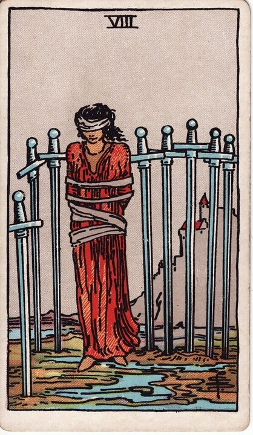

Minor Arcana · Suit of Swords
Eight of Swords Tarot Card Meaning
The Eight of Swords is the cage that isn't locked — feeling trapped, restricted, stuck in your own head. Want to know what it means in your spread? Every reader on our line is hand-vetted — connect in under 60 seconds, $1 for your first minute, hang up anytime.
- Hand-vetted readers
- Available 24/7
- Hang up anytime

Eight of Swords — What It Shows
A blindfolded, loosely bound woman stands among eight swords stuck in the ground around her — but there's a clear gap, the bindings are loose, and the swords don't form a complete cage. She could step out. After the cunning of the Seven, the Eight is the trap that's mostly mental: the restriction is real-feeling, but the prison is largely built of fear and limiting belief.
Eight of Swords Upright Meaning
Upright, the Eight of Swords is feeling trapped, restricted, and powerless. Stuck in a situation, paralysed by overthinking, or believing you have no options when you actually do. The card's honesty: the bindings are loose. Its core message is the way out exists — fear is hiding it.
Eight of Swords Reversed Meaning
Reversed, the blindfold comes off. Freeing yourself, a new perspective, releasing self-limiting beliefs, seeing options you'd been blind to. Less positively, it can be deeper entrapment, victim mentality hardening, or self-sabotage.
Eight of Swords in Love & Relationships
In love, the Eight of Swords is feeling stuck or powerless in a relationship — believing you can't leave, can't speak up, or have no choices, when the cage is more mental than real. Example: a caller convinced she was "trapped" in a situation drew this card; the read gently challenged that — the restriction felt total but the bindings were loose, and naming the actual options was the first step out.
Eight of Swords in Career & Money
For work it's feeling boxed in by a job, finances, or circumstances — often with more agency than you believe. Example: someone who felt they "had no choice" but to stay in a draining role pulled this card; the message reframed it: the constraints were partly real, partly fear, and clarity about which was which opened a path.
Eight of Swords as Advice
As advice: question the cage. Separate the real constraints from the fearful story, name your actual options out loud, and take one small step — the blindfold comes off by acting, not by waiting to feel ready.
Eight of Swords Reversed in Love & Career
Reversed, this card deserves a closer look by area. In love, the hopeful read is freeing yourself from a relationship or belief that felt inescapable — clarity and agency returning; the harder read is sinking deeper into "I have no choice," or self-sabotaging an exit. In career, reversed it's breaking out of a limiting situation, or conversely a victim mindset keeping you stuck. The reversed Eight's question is whether you're loosening the bindings or tightening them. A live reader can help you see which.
What People Ask About the Eight of Swords
The questions readers hear most about this card:
"Am I actually trapped?"
Usually less than it feels — the card stresses the bindings are loose.
"Eight of Swords as feelings?"
Stuck, powerless, "I don't know what to do" — overwhelmed by the situation.
"Is the problem external or in my head?"
Often a mix — the card points to the mental share of it.
"How do I get out?"
By naming real options and acting; reversed signals that breaking free.
Eight of Swords — Yes or No?
Leans no — but a "no" built largely from fear. Reversed shifts toward yes as you free yourself.
Eight of Swords Timing in a Reading
Timing is the least precise thing tarot does, so treat this as a lean, not a date. The Eight of Swords describes a stuck state more than a moving event — readers usually frame it as ongoing until you act rather than a set number of days. Reversed signals the breakout is near. A live reader reads timing from the full spread and your question far more reliably than the card alone.
Eight of Swords Card Combinations
Context changes everything — a few pairings readers see often:
Eight of Swords + Nine of Swords
Anxiety building the cage — fear feeding feeling trapped.
Eight of Swords + The Star
Hope and a path out becoming visible.
Eight of Swords + The Fool
A leap of faith breaking the self-imposed limitation.
Eight of Swords in a Tarot Reading
A meanings page is the map; a live reading is the territory. The Eight of Swords shifts with its position and the cards around it — which is what a hand-vetted reader interprets for your question. See the full Suit of Swords, all 56 cards on the Minor Arcana hub, or start a phone tarot reading.
← Seven of Swords · Next: Nine of Swords →
What Does the Eight of Swords Mean for You?
A meanings list is the map; a live reading is the territory. We'll connect you with the right hand-vetted tarot reader in under 60 seconds. $1/min first call · 15 minutes for $10 · hang up anytime · 100% satisfaction promise.
Call (888) 920-6662 NowEight of Swords — Frequently Asked Questions
What does the Eight of Swords mean?
Feeling trapped and restricted — a mostly self-imposed mental prison.
What does it mean reversed?
Freeing yourself and a new perspective — or deeper entrapment.
What does the Eight of Swords mean in love?
Feeling stuck or powerless when the restriction is more mental than real.
Is it a yes or no card?
Leans no — a fear-built no; reversed shifts toward yes.
How much does a reading cost?
First-time callers pay $1/min, or 15 minutes for $10, and you can hang up anytime.
Get Your Tarot Reading Now
Connected to a hand-vetted reader in under 60 seconds, the cards pulled on your real question, and you hang up with clarity.
Call (888) 920-6662